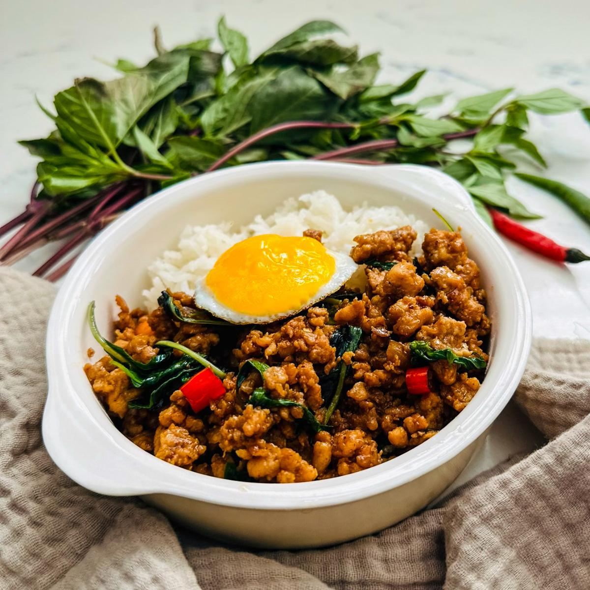
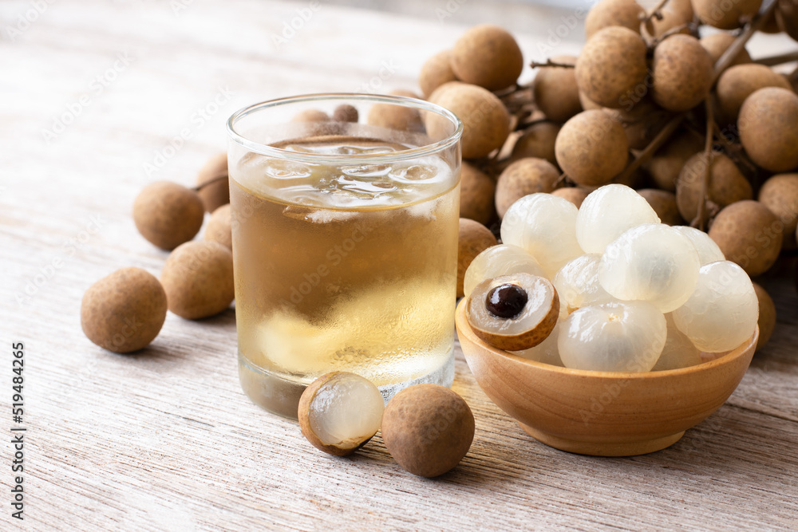

ผัดไทย Pad Thai
Stir-fried rice noodles with shrimp, tofu, and peanuts.

ต้มยำกุ้ง Tom Yum Goong
Spicy and sour shrimp soup with lemongrass.

แกงเขียวหวาน Green Curry
Spicy coconut curry with vegetables and meat.

ส้มตำ Som Tam
Spicy green papaya salad with peanuts and dried shrimp.

แกงมัสมั่น Massaman Curry
Rich, mild curry with potatoes and peanuts.

ผัดกระเพราไก่ Pad Kra Pao Gai
Stir-fried chicken with holy basil.

ชาเย็น Thai Iced Tea
Sweet and creamy iced tea.

น้ำลำไย Longan Juice
Fresh served after chill.